Inproject - Construtora e Engenharia
Eng. Bruno Oliveira – CREA/MG 250.610/D
Serviços oferecidos:
- ✅ Construção e reformas residenciais e comerciais
- ✅ Projetos técnicos (estrutural, elétrico, incêndio)
- ✅ Execução de sistemas de combate a incêndio
- ✅ Regularizações e aprovação no Corpo de Bombeiros
- ✅ Laudos e responsabilidade técnica (ART/CREA)
Fale conosco no WhatsApp